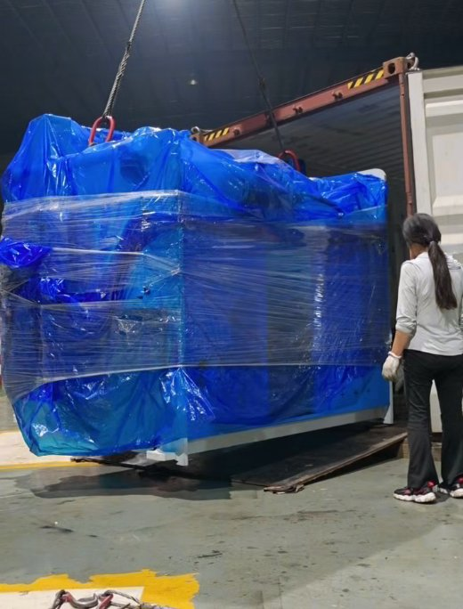

Press Brake Into the Container: How an Export Machine Gets Wrapped, Ramped and Loaded

Today's photo: a press brake mid-load into a 40-foot export container. The machine is fully wrapped in blue protective film and clear stretch wrap, riding on a timber skid, held by two crane slings on red lifting lugs as it is swung off the ramp and into the box. This is the last step before a machine leaves our factory — and the step where a careless packer can undo everything the workshop got right.
1. Why We Containerise Rather Than Flat-Rack
Most of our presses up to about 4000 mm fit a standard container on their side or on a low skid, which means the customer pays ordinary ocean freight instead of open-top or flat-rack rates, and the machine travels sealed against salt air and rain for the whole voyage. The blue film you see is a vapour-corrosion inhibitor layer; the clear wrap over it is mechanical protection against straps, hooks and other cargo shifting in the box.
2. How to Tell a Machine Was Packed Properly
A container is a promise that the machine arrives as it left — the wrap, the skid and the lashing are what keep that promise through 30 days at sea and two port cranes.
- Dried and oiled before wrapping — ground ways and cylinders are coated and desiccant laid inside so nothing flashes rust in the tropical hold;
- On a bolted timber skid — the frame is fixed to a skid that the fork trucks and crane slings both key off, so the machine is never slung off its own thin panels;
- Lift points used, not improvised — the red hooks engage the factory lifting lugs rated for the machine weight, exactly where the load is designed to be taken;
- Strapped to the container, not the skid — once inside, the whole unit is lashed to the box's twist-locks so it cannot walk during the voyage;
- Loose tooling in a separate crate — dies, punch segments and the pendant ride in their own marked box, out from under the main load.
3. What This Means for You at the Receiving End
- One container, one clearance — a standard box is easier and cheaper to clear through customs and to deliver to a site without a special heavy-haul permit;
- Unpack and go — because the machine ships assembled on its skid, commissioning is a matter of cutting the wrap, levelling and connecting, not re-fitting a frame;
- Optional add-ons — we can fit side tables, a front support frame or a laser guarding set before the wrap goes on, so accessories travel in the same box instead of a second shipment;
- Photo record on request — we send the wrapping and lashing photos before the doors close, so you have proof of condition for insurance and for your own receiving check.
Waiting on a machine that is already packed? Tell us your destination port — we reply with a quotation and the loading plan within 24 hours.